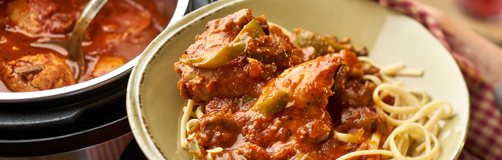
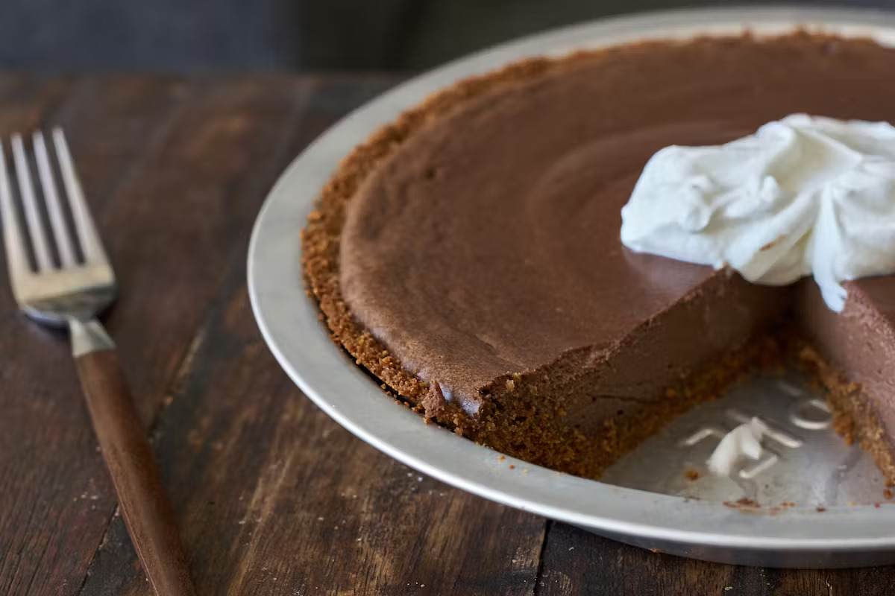

My Favorite Recipes
Everything Seasoning Chicken Nuggets
Total Time: 20 min
Makes: 2 servings

INGREDIENTS
- 12 breaded chicken nuggets
- 2 tablespoons everything bagel seasoning
- 1 tablespoon olive oil
- 1/3 cup plain Greek yogurt
- 1 ounce cream cheese
- 2 teaspoons chopped chives
- Salt and pepper
DIRECTIONS
-
Mix yogurt, cream cheese, chives, salt, and pepper to make a
dipping sauce.
-
Drizzle nuggets with olive oil and sprinkle with everything
seasoning.
- Bake or air fry nuggets according to package instructions.
- Serve hot with dipping sauce.
Instant Pot Chicken Cacciatore
Total Time: 35 min
Makes: 4 servings

INGREDIENTS
- 1 1/4 lb boneless, skinless chicken thighs
- 12 oz sliced mushrooms
- 1 large onion, chopped
- 1 green bell pepper, sliced
- 6 cloves garlic, minced
- 2 teaspoons Italian seasoning
- 1 jar Italian pasta sauce
- 3/4 cup dry red wine
DIRECTIONS
- Layer all ingredients into the Instant Pot.
- Seal the lid and cook on high pressure for 10 minutes.
- Quick release the pressure.
- Serve over pasta or rice.
Heavenly Chocolate Pie
Total Time: 1 hour
Makes: 8 servings

INGREDIENTS
- 2 cups crushed graham crackers
- 1/3 cup melted butter
- 2 tablespoons honey
- 8 oz cream cheese
- 8 oz silken tofu
- 1 egg
- 6 oz melted chocolate chips
- 1 teaspoon vanilla extract
DIRECTIONS
-
Mix graham crackers, butter, and honey and press into a pie
pan.
-
Blend cream cheese, tofu, egg, chocolate, and vanilla until
smooth.
- Pour filling into crust.
- Bake at 350°F for 30 minutes.
- Chill completely before serving.
Return to Home